Core question: how do backend services stay scalable, resilient, independently deployable, observable, and safe when a system is split across many smaller services?
Microservices are not just many small applications. A microservice architecture is a distributed system where each service owns a business capability, deploys independently, communicates through APIs or events, and usually owns its own data. The benefit is team autonomy and scalability. The cost is operational complexity: network failures, eventual consistency, versioning, tracing, deployments, and data ownership become everyday design concerns.
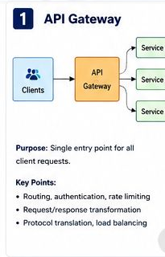
1. API Gateway
An API gateway is the entry point between clients and backend services. It can route requests, authenticate users, apply rate limits, transform requests, terminate TLS, and hide internal service topology from clients.
Example: a mobile app calls /api/reservations/123. The gateway validates the token, applies rate limiting, and routes the request to the reservation service.
Client -> API Gateway -> Reservation Service
-> API Gateway -> Payment Service
-> API Gateway -> Guest Profile Service
Keep the gateway focused on edge concerns. Business rules belong in domain services.
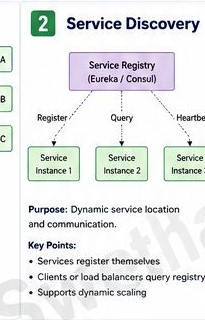
2. Service Discovery
Service discovery lets services find other services dynamically. In cloud systems, instances come and go because of scaling, deployments, crashes, and health checks.
Example: the reservation service needs the payment service. Instead of hardcoding one host, it asks discovery for healthy payment-service instances.
payment-service
instance A: healthy
instance B: unhealthy
instance C: healthy
Modern platforms often provide this through Kubernetes Services, Consul, Eureka, or cloud load balancers.
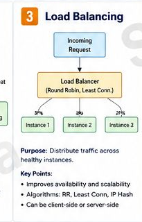
3. Load Balancing
Load balancing distributes traffic across healthy service instances. It improves availability and helps services scale horizontally.
Example: three reservation-service instances are running. The load balancer spreads traffic across them and removes unhealthy instances from rotation.
Incoming requests
-> reservation-service-1
-> reservation-service-2
-> reservation-service-3
Common strategies include round-robin, least connections, weighted routing, and latency-aware routing.
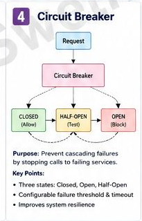
4. Circuit Breaker
A circuit breaker prevents repeated calls to a failing dependency. It protects your service from waiting on a dependency that is already unhealthy and helps prevent cascading failures.
Example: if the payment provider times out repeatedly, the circuit opens and the reservation service fails fast instead of tying up resources.
Closed: calls flow normally
Open: calls fail fast
Half-open: allow small test traffic
Fallbacks must be truthful. A cached itinerary can be acceptable. Pretending a payment succeeded is not.
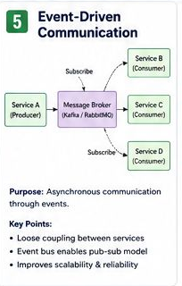
5. Event-Driven Communication
Event-driven communication lets services publish facts that other services consume asynchronously. This reduces direct coupling between services.
Example: after a reservation is created, the reservation service publishes ReservationCreated. Email, loyalty, analytics, and notification services consume it independently.
Reservation Service -> reservation-created topic
Email Service -> consumes event
Loyalty Service -> consumes event
Analytics Service -> consumes event
Consumers must be idempotent because events can be delivered more than once.
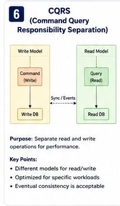
6. CQRS
CQRS means Command Query Responsibility Segregation. The write model handles commands that change state. The read model is optimized for queries.
Example: reservation creation writes to the reservation command model. A separate read model stores reservation summaries optimized for fast guest lookup.
Command side:
CreateReservation -> validate -> save -> publish event
Query side:
GetGuestTrips -> read optimized summary view
CQRS is useful when read and write workloads have different shapes. It adds complexity because read models may be eventually consistent.
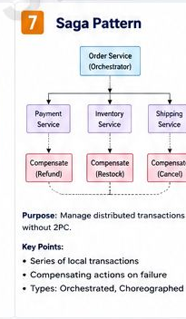
7. Saga Pattern
A saga coordinates a distributed transaction using local transactions and compensating actions. It avoids trying to hold one database transaction across many services.
Example: book cabin, authorize payment, confirm reservation. If payment fails, release the cabin hold.
1. Hold cabin
2. Authorize payment
3. Confirm reservation
Compensation:
payment failed -> release cabin hold
Sagas can be orchestrated by a workflow service or choreographed through events.
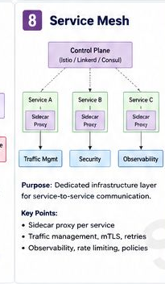
8. Service Mesh
A service mesh moves service-to-service networking concerns into infrastructure, often through sidecar proxies. It can handle mTLS, retries, traffic policies, observability, and rate limits.
Example: Istio sidecars encrypt calls between reservation, payment, and itinerary services without each team hand-writing TLS logic.
Reservation Service -> Sidecar Proxy
Sidecar Proxy -> Payment Sidecar
Payment Sidecar -> Payment Service
A mesh is powerful but operationally heavy. Use it when the platform needs consistent cross-service networking policy.
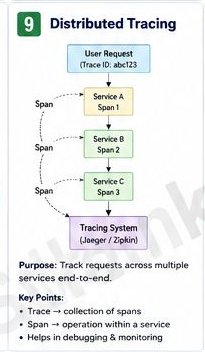
9. Distributed Tracing
Distributed tracing follows one request across multiple services. A trace is made of spans, where each span represents work done by one service or dependency call.
Example: a checkout request touches gateway, reservation, payment, cabin inventory, and notification services. A trace shows where latency or failure happened.
traceId=abc123
gateway span: 20 ms
reservation span: 80 ms
payment span: 900 ms
inventory span: 40 ms
Logs tell what happened. Metrics show trends. Traces show where time went across service boundaries.
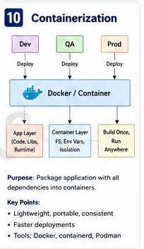
10. Containerization
Containers package an application with its runtime dependencies so it runs consistently across environments. Docker is the common packaging tool; Kubernetes often runs containers in production.
Example: the reservation service is built once as an image and promoted through dev, QA, and production.
Build once:
reservation-service:1.24.0
Run in:
dev
qa
prod
Containers improve consistency, but they still need configuration, secrets management, health checks, and resource limits.
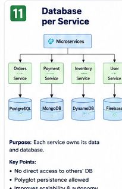
11. Database per Service
Each microservice owns its own data and database schema. Other services should not directly query or modify that database.
Example: the payment service owns payment records. The reservation service asks the payment service for payment state or consumes payment events; it does not query the payment database directly.
Reservation Service -> reservation_db
Payment Service -> payment_db
Guest Service -> guest_db
This preserves service autonomy, but cross-service queries often require APIs, events, read models, or CQRS.
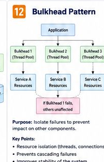
12. Bulkhead Pattern
The bulkhead pattern isolates resources so one failing area does not take down the whole system.
Example: payment calls use a separate connection pool from itinerary calls. If payment slows down, itinerary lookups can still work.
Payment dependency:
max concurrent calls = 30
Itinerary dependency:
max concurrent calls = 100
Bulkheads can be thread pools, connection pools, queue limits, rate limits, or separate service instances.
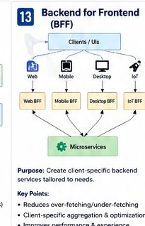
13. Backend for Frontend
A Backend for Frontend is a client-specific backend that shapes data for one frontend experience, such as mobile, web, desktop, or kiosk.
Example: the mobile app needs compact reservation summaries, while the web admin tool needs operational details. A mobile BFF and admin BFF can optimize separately.
Mobile App -> Mobile BFF -> Microservices
Web Admin -> Admin BFF -> Microservices
BFFs reduce over-fetching and under-fetching, but avoid duplicating core business rules across every frontend backend.
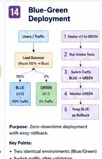
14. Blue-Green Deployment
Blue-green deployment runs two production-like environments. One serves traffic while the other receives the new version. Traffic switches after validation.
Example: blue runs reservation-service v1. Green deploys v2. Smoke tests pass, traffic moves to green, and blue remains available for rollback.
Before:
Blue = v1, 100% traffic
Green = v2, 0% traffic
After:
Blue = v1, rollback target
Green = v2, 100% traffic
The hard part is data compatibility. The new and old versions may need to work with the same database schema during rollout.
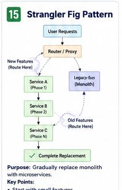
15. Strangler Fig Pattern
The strangler fig pattern incrementally replaces a legacy system. New functionality is routed to new services while old functionality continues running until it can be retired.
Example: route new reservation search traffic to a new WebFlux service while legacy booking flows remain in the monolith. Move one capability at a time.
Client -> Router
-> New reservation-search service
-> Legacy monolith for remaining features
This reduces big-bang migration risk. It needs clear routing, data synchronization, observability, and a plan to remove old paths.
A guest books a cruise from the mobile app. The request enters through an API gateway, routes to a reservation service, calls payment and cabin inventory services, saves reservation data in the reservation database, and publishes ReservationCreated. Notification, loyalty, and analytics services consume the event. Distributed tracing follows the request, circuit breakers protect failing dependencies, containers package each service, and blue-green deployment releases new versions safely.
Microservices split a system into independently deployable services around business capabilities. The major concepts include API gateways for edge routing, service discovery and load balancing for dynamic traffic, circuit breakers and bulkheads for resilience, event-driven communication for loose coupling, CQRS and sagas for complex data and workflow patterns, service mesh and distributed tracing for platform-level communication and observability, containers for consistent deployment, database per service for ownership, BFFs for client-specific APIs, blue-green deployments for safer releases, and the strangler fig pattern for modernizing legacy systems gradually. The main tradeoff is that microservices increase distributed-system complexity, so I design around failure, latency, idempotency, observability, deployment safety, and clear ownership boundaries.